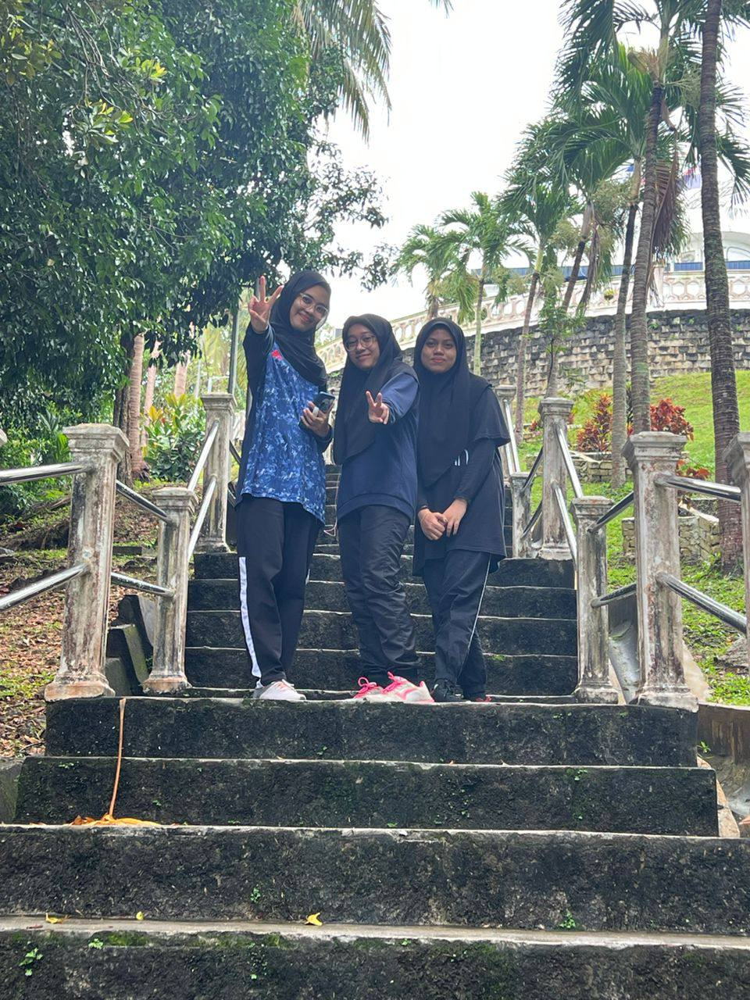

three of housemates (click on each member faces to know more)
In 29th October 2022, me and my three housemates went to Bukit Batu Putih, Negeri Sembilan. Since this is my first experience of hiking Its take us takes less than 10 minutes, and it is designated by ropes along a clear forest route, one hours in total to climb up and another hours to climb down. For our first challenge we choose to trek from Cape Rachado's base and descend from the top to a secluded harbor with a charming beach bordered by tiny granite formations. On second challenge and the real deal was Bukit Batu Putih itself.Even thought, it was very challenging and tiring but the beauty of the limestone peak named Bukit Batu Putih stands atop a hill in Cape Rachado, not far from Tanjung Tuan's lighthouse. Furthermore, we are lucky that we climbing it or sunny day therefore, we were offers with clear panoramic view over the whole coastline of PD and is just a short forest path away from the lighthouse. can also choose to trek from Cape Rachado's base or descend from the top to a secluded harbor with a charming beach bordered by tiny granite formations.